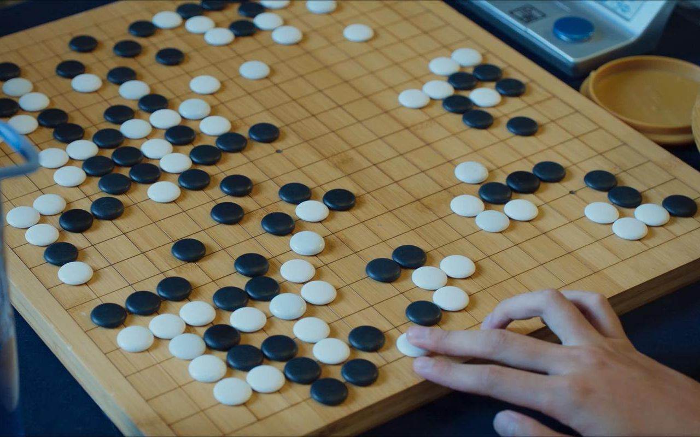
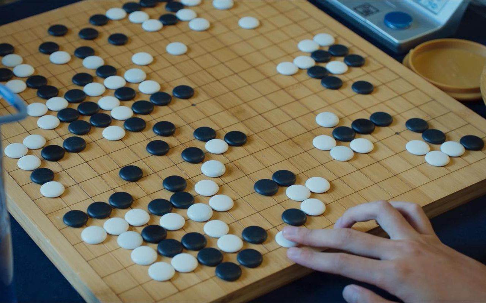

China's Top Nine National Quintessence
EMBROIDERY 刺绣
PAPERCUTTING 剪纸
GO CHESS 围棋
- Embroidery is the general term for various decorative patterns embroidered on fabrics by needle and thread. Embroidery is divided into silk embroidery and feather embroidery. It is a decorative fabric that uses needles to puncture silk threads or other fibers and yarns on embroidery materials with certain patterns and colors, and forms patterns with embroidery traces. It is the art of adding human design and fabrication to any fabric that exists, using needle and thread. Embroidery is one of the traditional Chinese folk crafts, with a history of at least two or three thousand years in China. If you want to know more details, please click on the picture.
- Papercutting is a kind of folk art that uses scissors or a carving knife to cut and carve patterns on paper, which is used to decorate life or cooperate with other folk activities. In China, paper-cut has a broad mass base, blends into the social life of people of all nationalities, and is an important part of various folk activities. Its continuously inherited visual image and modeling format contain rich cultural and historical information, and express multiple social values such as social cognition and moral concepts of the general public. If you want to know more details, please click on the picture.
- Go, a strategic board game for two players. Go originated in China, and it was recorded in the Spring and Autumn and Warring States Periods. During the Sui and Tang Dynasties, it was introduced to Japan via Korea, and spread to European and American countries. Go contains rich connotations of Chinese culture, and it is the embodiment of Chinese culture and civilization. Go is played on a rectangular lattice board and black and white two-color circular chess pieces. If you want to know more details and how to play Go, please click on the picture.
CERAMICS 陶瓷
CHINESE TEA CULTURE 茶道
SILK 丝绸
- Ceramics is a kind of arts and crafts in our country. As far back as the Neolithic Age, China already had rough and simple painted pottery and black pottery. Pottery and porcelain have different textures and properties. Pottery is made of clay with high viscosity and strong plasticity as the main raw material. It is opaque, has fine pores and weak water absorption, and the sound of hitting is muddy. Porcelain is made of clay, feldspar and quartz, translucent, non-absorbent, anti-corrosion, hard and compact, and crisp when knocked. Traditional ceramic arts and crafts are famous all over the world for their high quality, beautiful shape and high artistic value. If you want to know more details, please click on the picture.
- The tea ceremony is an aesthetic way of tasting tea. It is also regarded as a life art of cooking and drinking tea, a life etiquette using tea as a medium, and a life style of self-cultivation with tea. It is a very beneficial and beautiful ritual through making tea, appreciating tea, smelling tea, drinking tea, enhancing friendship, cultivating morality, learning etiquette, and appreciating traditional virtues. Drinking tea can calm the mind and calm the mind, help cultivate sentiment and remove distracting thoughts. If you want to know more details, please click on the picture.
- Silk is a special product of China. The working people in ancient China invented and produced silk products on a large scale, which opened up the first large-scale commercial exchange between the East and the West in world history, known as the "Silk Road" in history. Since the Western Han Dynasty, Chinese silk has been shipped abroad in large quantities and has become a world-famous product. At that time, the road from China to the west was called the Silk Road by Europeans. If you want to know more details, please click on the picture.
PEKING OPERA 京剧
TRADITIONAL CHINESE MEDICINE
中医
CALLIGRAPHY 书法

- Peking Opera is one of the quintessences of China and the most influential opera in China. Its distribution centers around Beijing and spreads all over the country. Peking Opera has a set of standardized artistic expressions in literature, performance, music, stage art and other aspects. Peking Opera takes historical stories as its main content. If you want to know more details, please click on the picture.
- TCM was born in primitive society, and the theory of TCM was basically formed during the Spring and Autumn and Warring States Periods, and then it was summed up and developed in successive dynasties. Traditional Chinese medicine carries the experience and theoretical knowledge of the ancient Chinese people in fighting diseases. It is a medical theoretical system gradually formed and developed through long-term medical practice under the guidance of ancient simple materialism and spontaneous dialectics. If you want to know more details, please click on the picture.
- Calligraphy is a unique artistic expression of the beauty of characters in China and neighboring countries and regions that have been deeply influenced by Chinese culture. It is a unique traditional art of Chinese characters. Calligraphy refers to writing according to the characteristics and meaning of characters, with its calligraphy style, structure and composition, making it a work of art full of aesthetic feeling. If you want to know more details, please click on the picture.
China
Contact
Legal
Visitors can learn more knowledge about China through my website. Let them know about Chinese culture and architecture with a long history. Finally, I also hope that visitors can go to China to experience Chinese culture and characteristics in person.
ytian6167@baysidehighschool.org
Terms of use
©2022 Copyright China • All Rights Reserved.
 
